Structural variant calling - long read data¶
Anticipated workshop duration when delivered to a group of participants is 4 hours.
For queries relating to this workshop, contact Melbourne Bioinformatics (bioinformatics-training@unimelb.edu.au).
Overview¶
Topic¶
- Genomics
- Transcriptomics
- Proteomics
- Metabolomics
- Statistics and visualisation
- Structural Modelling
- Basic skills
Skill level¶
- Beginner
- Intermediate
- Advanced
This workshop is designed for participants with no command line knowledge. A web-based platform called Galaxy will be used to run our analysis. We will be using 1 line awk programs to process text output, but these will be supplied and explained.
Description¶
Long reads have turbo-charged structural variant detection - be part of the renaissance!
Structural variation has historically been hard to detect. The advent of long reads, and improvements to the quality of reference genomes over time has recently enabled new discoveries in the field. This tutorial uses sniffles to implement a structural variant calling pipeline. Structural variant calling will be performed on a bacterial dataset to benchmark sniffles, then using a human clinical dataset to identify patient disease. We will explore one workflow for structural variant detection, then will visualise and summarise our results using multiple methods.
Data: Nanopore reads: bacterial & human (FASTQ), genomic feature annotations (GFF), human reference genome hg38
Pipeline: Read summaries & QC, alignment, SV calling, text processing, visualisation
Tools: NanoPlot, Filtlong, minimap2, CalMD, SortSam, sniffles, VCFsort, VCFannotate, awk, Circos, IGV
Section 1 covers bacterial SV calling and benchmarking of bioinformatics tools.
Section 2 will demonstrate SV calling on a human sample to diagnose a patient condition.
Learning Objectives¶
At the end of this introductory workshop, you will :
- Be able to perform SV calling in model and non-model organisms
- Be familiar with the current field of SV calling
- Gain an understanding of why and when SV calling is an appropriate analysis to perform.
Required Software¶
- No additional software needs to be installed for this workshop.
Required Data¶
- No additional data needs to be downloaded for this workshop.
Author Information¶
Written by: Grace Hall
Melbourne Bioinformatics, University of Melbourne
Created/Reviewed: March 2021
Background¶
What is Structural Variation?¶
Genetic variation is always relative. In general, we have a reference sequence which we know lots about, and query sequences to compare against this reference. Given we know lots about the reference, the impact of any variation we find in the query sequences can be inferred. The query sequences can originate from a single individual or a group, depending on the biological question.
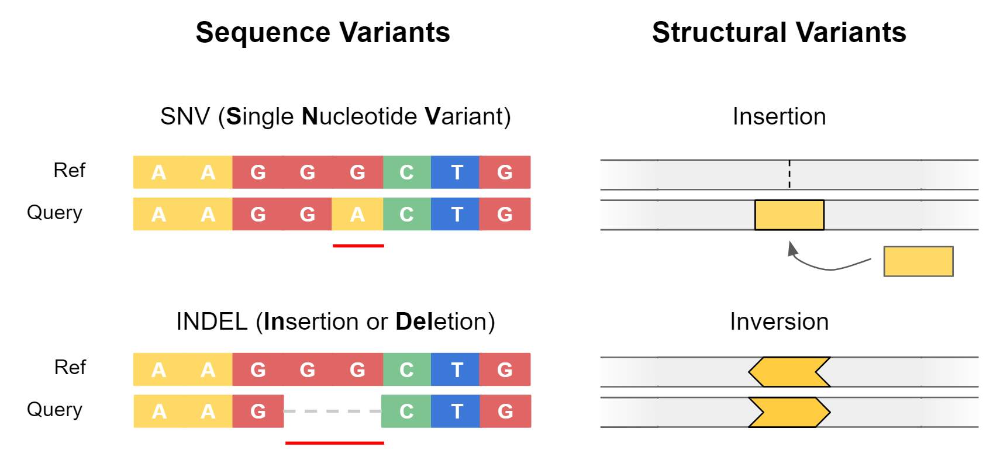
Genetic variants are often separated into two categories: sequence variants, and structural variants.
Sequence variants cover small-scale changes which affect a few nucleotides, such as single nucleotide variants (SNVs) or small insertions / deletions (Indels). They are particularly important when they impact coding sequences of genes, as can alter the amino acid sequence of proteins.
Structural variants (SVs) are large-scale events (>50 bp) where entire sections of genetic material have changed. An example is a deletion, where an entire section of DNA has been removed. Structural variants have the potential to greatly alter the gene dosage of a cell by duplicating or deleting entire exons or genes at a time.
Benefit of Long Reads¶
Structural variation has historically been hard to detect. This is because structural variation often involves repeat elements which are notoriously hard to resolve using short-read sequencing technologies. Either the structural variant itself is a repeat, or it occurs in a repetitive region of the reference genome.
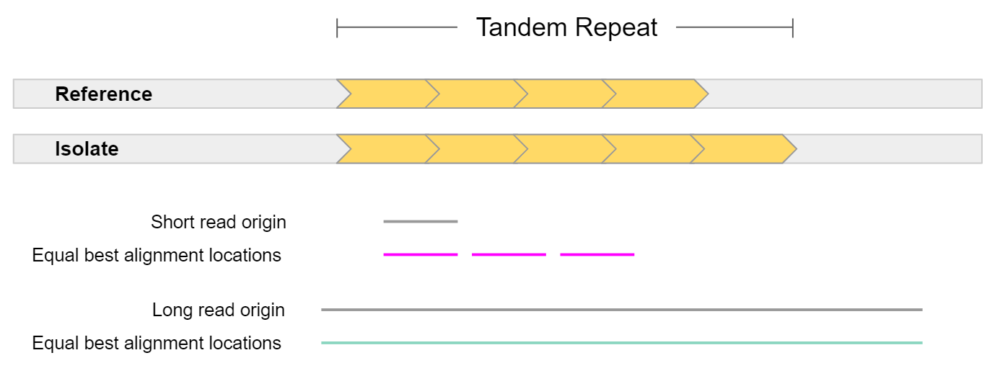
In general, long reads have greater mappability. Mappability is the ability to unambiguously align reads to a reference. In the example above, a short read sampled from a tandem repeat cannot be accurately mapped, as it is equally likely it came from 3 different locations. On the other hand, a long read sampled from this region can be uniquely mapped to a single location. The extra repeat found in the isolate could also be detected given such a read.
This is highly pertinent when working with the human genome, as more than 60% appears to be repetitive sequence. This repetitive sequence consists of 2 main elements: mobile elements, and repeats. Mobile elements are sections of DNA which copy or move themselves throughout our genome and include retrotransposons (LINE, SINE, LTR, and SVA) and DNA transposons. Repeats are genomic regions which contain the same sequence repeated many times, and consist of Short Tandem Repeats (STRs / microsatellites) which are 1-6 bp tandem repeats, or Variable Number of Tandem Repeats (VNTRs / minisatellites) which are tandem repeats where the repeat length is greater than 7 bp.
Applications of Structural Variant Detection¶
The importance of structural variation has become more apparent in recent years. This has been driven by the advent of long-read sequencing technologies, and the availability of better reference genomes (including improvements to human reference genome hg38). Today, SV detection is implicated in many areas of bioinformatics, including the following:
Human Disease
- Cohort studies
- Identifying new, disease-causing structural variation
- Assessing an individual’s susceptibility to disease mediated by SVs
- Cancer genomics
- Susceptibility of individual to certain cancers
- Monitoring of tumor progression
Agriculture
- Identifying desirable traits
- Flowering rate, frost / drought resistance, improved crop yield
- Genetic modification
The Microbial World
- Understanding the relationship between microbiome SVs and human health
- Studying phylogeny and evolution of microbes (including horizontal gene transfer)
- Researching the spread of mobile elements and plasmids which convey virulence or antibiotic resistance genes
Structural Variant Types¶
Structural variants are either destructive (involving a change in total genetic material), or non-destructive (total genetic material stays the same). Destructive variants are often particularly interesting, as they alter the gene dosage of a call. This can lead to overexpression of genes, or knock-out variants with zero expression if a gene was removed. Destructive SVs are highly implicated in cancer genomics, as undesirable genes such as tumor-suppressors can be removed, while desirable genes involving growth and proliferation can be expressed in much higher quantity.
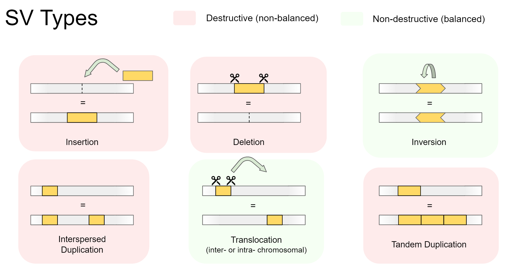
There are 5 main types of structural variation. Insertions, Deletions, Inversions, Duplications, and Translocations. Specifically, they involve the following:
-
Insertions
A foreign section of genetic material is inserted -
Deletions
A section of genetic material is removed -
Inversions
A section of genetic material swaps its orientation -
Duplications (interspersed or tandem)
A section of genetic material is copied, then inserted. Can be separated into:- Interspersed duplications, where the insertion site is away from the copied section
- Tandem duplications, where the insertion site is directly beside the copied section
-
Translocations (intra- or inter-chromosomal)
A section of genetic material is cut out, then inserted somewhere else. Can be separated into:- Intra-chromosomal translocations, where the insertion site is within the same chromosome
- Inter-chromosomal translocations, where the insertion site is on another chromosome
Variants detected by common SV calling programs¶
Many SV calling programs do not attempt to detect interspersed duplications and intra-chromosomal translocations. This is because most SV callers have been designed for use with human data, and these variants are less relevant to the human genome than other organisms.
Regarding interspersed duplications, most RNA transposons (the mechanism of variation) are inactive in the human genome. A few are still active, but an impact will only be seen if the insertion site (insert location of the copied segment) is within an important genomic feature, such as a gene body or enhancer region.
Intra-chromosomal translocations are ignored for similar reasons. These are mainly caused by DNA transposons, which are considered inactive in humans. DNA transposons are still active in other eukaryotes (including most plants) and bacteria, so must be considered when working outside human data.
SV calling pipeline¶
Today, we will explore one workflow for SV calling. We will first call variants using a benchmarking dataset, where the true SVs are known. We will then swap to a human clinical scenario, and will identify a structural variant causing patient disease.
We will use the workflow below to explore structural variation. This workflow has 3 main sections - data exploration, calling variants, then interpreting our findings. Our process will be slightly different depending on whether we are working with the bacterial read set, or the human sample.
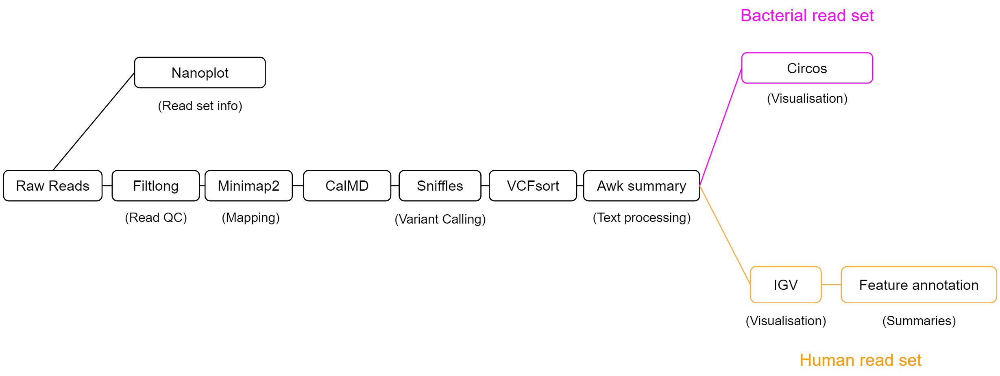
Our SV calling workflow will consist of 5 key steps:
-
Read QC
The length and quality distribution of long-read data is highly variable. We will summarise our read set using NanoPlot, to understand what quality of results to expect during analysis. Filtlong will then be used to remove short reads, or those with patches of low quality. This will reduce erroneous read mapping and will improve our results. -
Alignment
Structural variation is always relative to a reference. Our isolate reads will act as the query, and an appropriate reference genome will be selected to measure structural variation against. We will align our isolate reads using minimap2 to the chosen reference genome, then will pass the output alignment BAM file to our SV caller. -
SV calling
Our SV caller, sniffles, uses the read alignment information to detect structural variation. It will output variant calls in VCF format, which we will then process with awk to create a summary which is easy to read. -
Feature annotation
Variants which span or otherwise intersect with key genomic regions are most likely to have functional impact. Rather than doing this manually for each variant, we can use awk and VCFannotate to automatically label variants with the genomic features they intersect with. -
Visualisation
Visualisation will be performed to understand variation on a genome-wide scale, and to probe single variants for their potential functional impact. Circos plots will be generated for the bacterial read set to view the total variation across the genome, and IGV will be used on the human clinical dataset to infer the functional consequences of variants.
Section 1: Bacterial dataset¶
Introduction¶
The first dataset we will use is a synthetically mutated bacterial genome. Structural variants and single base mutations have been added to an E. coli sakai assembly, then Nanopore reads of this mutated genome were simulated using NanoSim. We will use these reads to identify the SVs we added using our SV calling pipeline.
The benefit to this approach is that we know the ground truth. SVs were manually added to our E. coli sakai reference genome, and their details were recorded. As we have a list of SVs which were added, we can assess sniffles performance at SV calling by the number of SVs it correctly identifies.
In this section we will:
- Perform read Quality Control (QC)
- Align reads
- Perform SV calling
- Create SV call summaries using awk (text processing)
- Visualise SV calls with Circos
We will employ a number of tools in our pipeline, so let’s get to it!
Getting the data¶
To start, we need a set of reads from our synthetic isolate, a reference genome to call SVs against, and a ‘ground truth’ list of variants which have been added to our isolate.
Import the following Galaxy history to get started:
https://usegalaxy.org.au/u/graceh1024/h/sniffles-benchmarking-ecoli-sakai
Importing a galaxy history
How to import
Galaxy histories can be accessed via a link, or in the ‘Shared Data’ tab of the top navigation bar. Once you find a history you want to copy, press the ‘+’ icon at the top right of the page to import the history
- The reference genome is “ecoli_sakai.fasta”
- Our reads are “isolate_reads.fastq”
- The list of added SVs is “isolate_sv_record.tsv”
Read QC¶
Before proceeding, we want to understand our read set. Nanopore reads can have highly variable read length and quality distributions from sample to sample - by creating a summary, we can know what to expect from our reads, and whether we should perform QC filtering.
Create a summary of the reads
First, we want to get a summary of our read set. NanoPlot creates plots to summarise the length distribution and quality of our read set.
Tool: NanoPlot
- Type of the file(s) to work on: fastq
- files: isolate_reads.fastq
NanoPlot creates 5 outputs. Today, we are only interested in the HTML report. This report contains a summary table which will summarise most of the important information, followed by plots displaying the read length and quality distribution of reads. Your report may be similar to the following image:
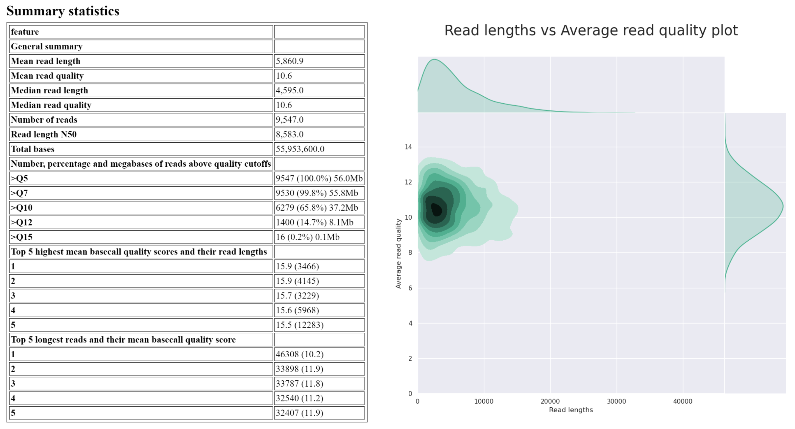
Answer the questions below regarding isolate_reads.fastq:
What is the median read length?
answer
____ bp
What is the median read quality?
answer
Q__ (phred ___)
What is the length and mean quality of the longest single read?
answer
____ bp, Q ___
As a significant proportion of the reads are short or low quality, we will perform a filtering step to reduce incorrect SV calls downstream in our analysis.
Filter reads
Long reads can have a wide range of lengths and qualities. Filtering of long reads is often conducted slightly differently to short reads. Often, reads less than 1000 bp are removed, and reads containing patches of poor quality are discarded. This is an important distinction to short read filtering, as a given long read can have a good overall base quality, while having areas which are very low quality. As our SV caller, sniffles, looks at alignment quality when identifying structural variation, it is important we remove reads with low-quality patches.
Tool: filtlong
- Input FASTQ isolate_reads.fastq
- Output thresholds
- Min. Length 1000
- Min. window quality 9
rename the output to ‘isolate_reads_filtered.fastq’
The above will remove any reads which are less than 1000 bp, or those where a section (250bp) of the read has mean quality below Q9. Our readset will now be ready for structural variant calling.
Alignment¶
Sniffles requires an alignment file when calling variants. It searches the alignments for split reads, alignments containing patches of high error rate, and soft clipping of reads to identify structural variation. Below we can see how different isolate reads capturing an inversion might be aligned to the reference genome.
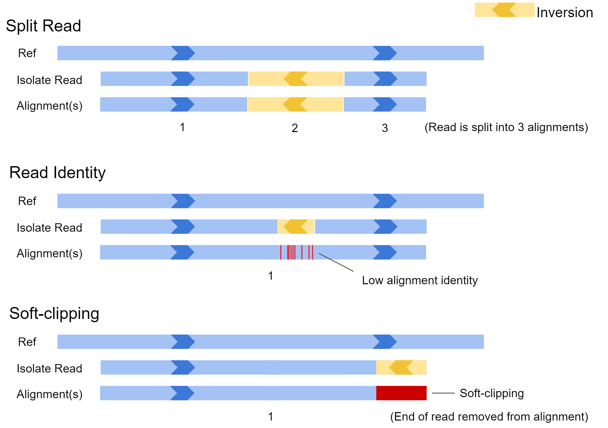
In the first example, the inversion appears near the middle of the read and is large. In this case, the aligner may split the read and report the alignment in 3 sections. In scenario 2, the inversion is quite small, and the read may not be split. In this case there would be a patch of low sequence identity between the read and reference genome at the inversion location. In the final example, only the very edge of the read has spanned the SV, and as a result the aligner may just report a single alignment with part of the read clipped off. All this information is available to our SV caller after the reads are aligned to our reference genome.
To provide this file, we need to map our read set to our reference genome of choice. The reference genome should be as close as possible to the isolate from which our reads originate for best results. In this situation, the original E. coli sakai assembly which we computationally mutated will be our reference genome.
Align reads
Tool: Map with minimap2
- Will you select a reference genome from your history or use a built-in index? Use a genome from history and build index
-
Use the following dataset as the reference sequence ecoli_sakai.fna
-
Single or Paired-end reads single
-
Select fastq dataset isolate_reads_filtered.fastq
- Select a profile of preset options Oxford Nanopore read to reference mapping…
-
Set advanced output options
- Generate CIGAR Yes
Rename output to “isolate mapped reads”
Calculate MD Tag
Sniffles requires alignments to contain the ‘MD tag’ in our BAM file. This is a condensed representation of the alignment of a read to the reference, and is similar to a CIGAR string. We can use CalMD to add this to each alignment in our BAM file.
Tool: CalMD
- BAM file to recalculate isolate mapped reads
- Choose the source for the reference genome Use a genome from the history
- Using reference file ecoli_sakai.fna
Rename output to “isolate mapped reads MD”
SV calling with sniffles¶
Now we have our alignments (BAM) in the correct format, we can call variants with sniffles. Sniffles generally has good defaults, so we will leave everything as-is for now. Later, we will tweak the settings based on our read set for better results.
Call variants
Tool: sniffles
- Input BAM file isolate mapped reads MD
Rename the output to ‘sniffles variant calls’
Have a look at the VCF output of sniffles. It contains header lines providing metadata and definitions, followed by variant call lines. VCF stands for ‘Variant Call Format’ and is the standard format for recording variant information - both sequence variants, and structural variants. Click the eye icon to view.
Sort VCF output
Before continuing, we well sort the variant calls so they are in coordinate order. This will help us compare against the truth SV record for our simulated isolates (provided SV records are sorted by coordinate), and in future will allow us to view the variants using a genome browser.
Tool: VCFsort
- Select VCF dataset sniffles output VCF
Rename the output to ‘sniffles variant calls sorted’
Creating a summary (awk)¶
Unfortunately, the VCF file format was not created to store structural variant information, and generally does a poor job. In its current state, it is not very easy to quickly summarise our variant calls, as a lot of the important information is shoved in the ‘INFO’ field.
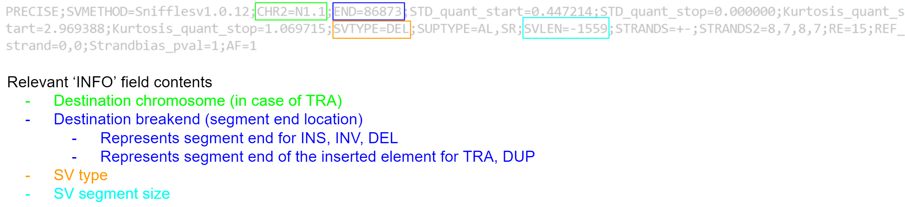
We would prefer a format which identifies the contig, location, type, and size of each variant call in an easy to read manner. We can create such a summary using text processing - specifically by using the ‘awk’ tool. For each variant call we will extract the value for the #CHROM, #POS, and #ID fields, and from the #INFO field we will extract the remaining information we need.
Awk processes the input file line-by-line. For each line, it follows the following approach:
For a given line, if the pattern is matched, the action will be performed. For example, given the following input file:
And the command:
We will obtain the output:
How it works:
/gene/ will match any line which contains “gene”, and the statement { print $0 } will print the line. Awk always sets some variables for the line being processed - in particular, the complete line is stored as $0, and $1, $2, $3 etc store the value for field 1, 2, 3 etc respectively.
If desired, we can also perform multiple actions when the pattern is matched:
Awk is a highly versatile tool for text processing, and can perform all the common functionality including conditional if / else statements and loops.
From here the awk programs will be supplied, but if you wish to learn more, here is a good place to start: https://zetcode.com/lang/awk/
Process VCF with awk
Tool: Text reformatting with awk
- File to process: sniffles variant calls sorted
- AWK Program:
Rename output to “sniffles VCF summary”
Your output may look something like this:
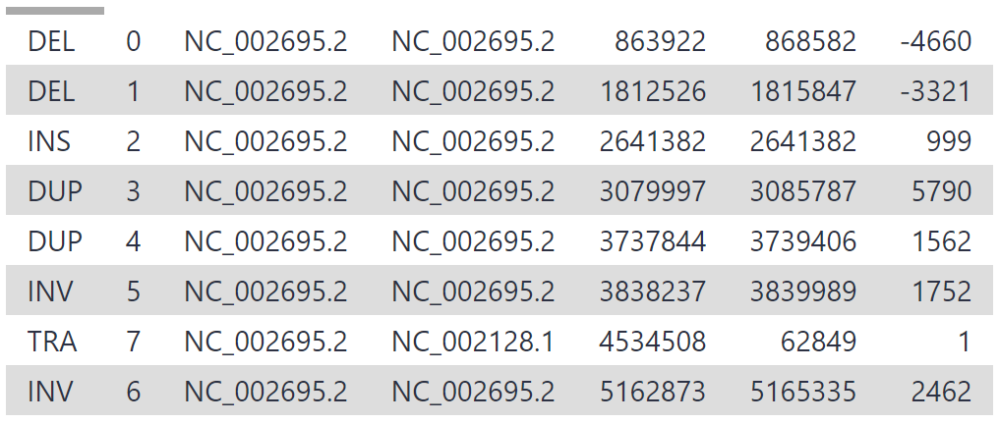
Calculating sniffles Performance Metrics¶
We now have both files we need to measure the performance of sniffles - the variant calls provided by sniffles, and the ground SV truth. Open both files in new tabs and compare them by right-clicking the eye icon then selecting ‘open link in new tab’. Specifically, note the following:
- How many real SVs did sniffles identify (true positives)
- How many did it miss? (false negatives)
- How many SVs were called by sniffles which were not actually added to the reference genome? (false positives)
From this information we can calculate performance metrics for sniffles. The following formulas for accuracy, precision and recall are commonly used when benchmarking bioinformatics software.
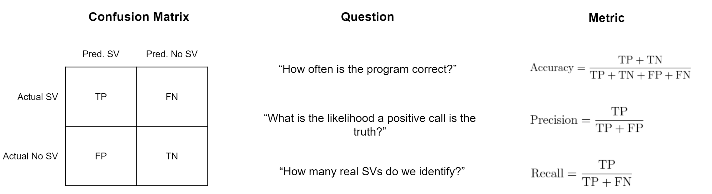
What was sniffles recall?
answer
____ bp
While the accuracy and precision of sniffles was good, the recall is low. This is due to a key setting in sniffles which relates to our read set - read support.
Tuning sniffles Settings¶
Sniffles has a default setting called ‘read support’ which requires 10 reads to support a possible SV for it to be accepted as genuine. Reducing this number allows more SVs to be discovered, but may also cause some false positives (SV calls for variants which do not actually exist). Conversely, we can be more strict by increasing this number. The best choice for this setting depends on the biological question you wish to answer, and the amount of read depth your dataset has.
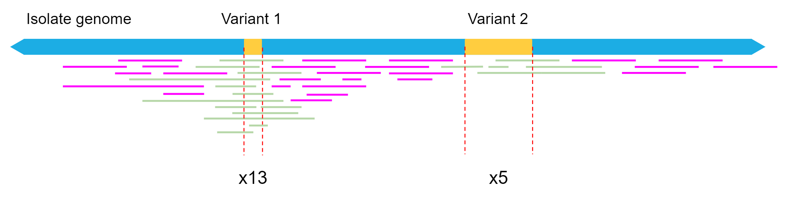
Our filtered read set fastq file was 139 mb, so we have approximately 70 mbp worth of long read data. As the genome size of our isolate is approximately 5 mbp, this equates to only around 12x mean read depth for a given location in the reference genome. Read depth is not uniform, so we expect some regions to have less than 12x depth, resulting in some structural variants being missed by sniffles if not enough reads supported the call.
As our mean depth is 12x, but the quality of our reads is good, we will reduce the ‘read support’ setting to 5.
Re-run sniffles
Run sniffles again by clicking the re-run button on the sniffles VCF output. By clicking the re-run button, all the settings previously used will already be filled.
Change the following:
- Set general options
- Minimum Support: 5
Leave all else default and click ‘execute’
Rename the output to ‘sniffles variant calls RS5’
Re-run VCFsort
Run VCFsort again by clicking the re-run button.
Change the following:
- Select VCF dataset: ‘sniffles variant calls RS5’
Leave all else default and click ‘execute’
Rename the output to ‘sniffles variant calls RS5 sorted’
Re-run awk
Run awk again to create a summary by clicking the re-run button.
Change the following:
- File to process: ‘sniffles variant calls RS5 sorted’
Leave all else default and click ‘execute’
Rename the output to ‘sniffles VCF summary RS5’
Our new variant calls should be an improvement on the original settings. You may see something similar to the following:
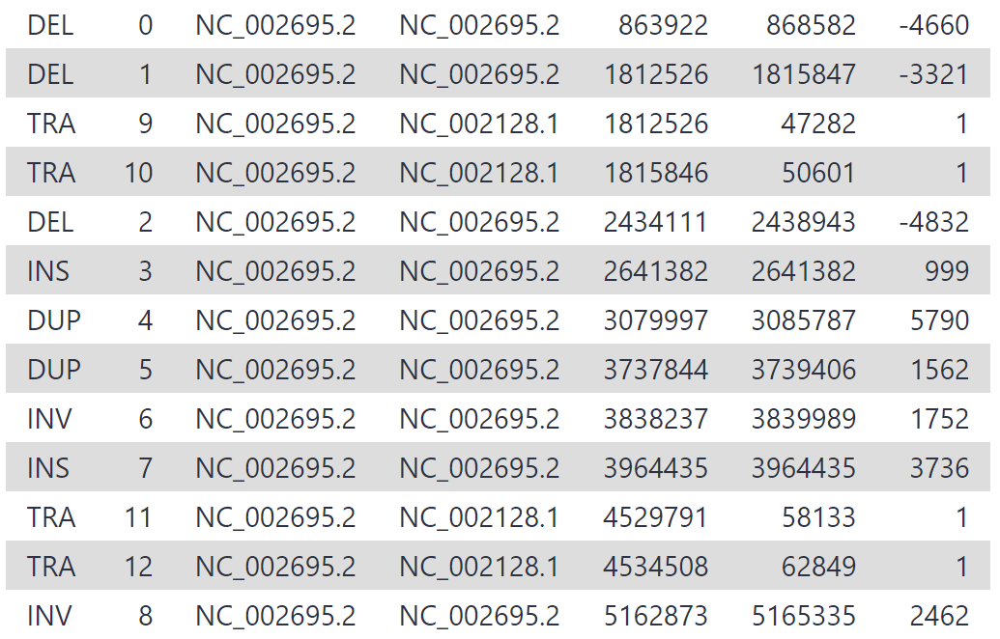
We have increased our recall by lowering our read support threshold to 5, rather than 10. While being less conservative in this manner will increase recall, it also may result in greater false positives (sniffles calling variants that don’t exist). Whether we maximise precision or recall depends on the task at hand - in this case, we want to discover all the variants and prefer high recall, and should therefore treat our variant calls with more scepticism.
Visualising SV calls¶
Visualisation and interpretation is an important part of any analysis. Now we have our SV calls, we can view them on a genome-wide scale using a type of visualisation called a circos plot. Circos plots are often featured on the cover of academic journals as they can communicate a large amount of genomic information at a glance.
We will now make a circos plot which displays our variant calls. Similar to genome browsers, circos plots are built from data tracks. When dealing with genomic data, the outer coordinate system (called the ideogram) is usually the chromosomes of a genome, and the tracks pin data to their genomic positions. For this workshop, we will use a galaxy workflow to create our circos plot, but if you would like to learn how to create these plots yourself, see the following tutorial:
Create Circos plot
We will be using a workflow to create circos plots for us. This will process our sniffles VCF summary and SV truth report, and produce a plot.
Invoke the workflow using this link:
https://usegalaxy.org.au/workflows/run?id=6588e175004aba38
Optional: importing a galaxy workflow
importing rather than running
Galaxy workflows can be directly run, or can be imported as a workflow. The benefit to importing a workflow is that you can see all the tools that are being run, and can customise the workflow to suit your needs. Like shared histories, workflows can also be found in the ‘Shared Data’ tab of the top navigation bar. Once you find a workflow you want to import, press the ‘+’ icon at the top right of the page to import the workflow. The circos plot workflow can be imported using the following link: https://usegalaxy.org.au/u/graceh1024/w/long-read-sv-calling---circos-plots
Set the following:
- sniffles VCF summary: sniffles VCF summary RS4
- Reference Genome: ecoli_sakai.fna
- SV truth record: isolate_sv_record.tsv
Click the blue ‘Run Workflow’ button on the top right to execute the workflow. Your output might be similar to the following figure:
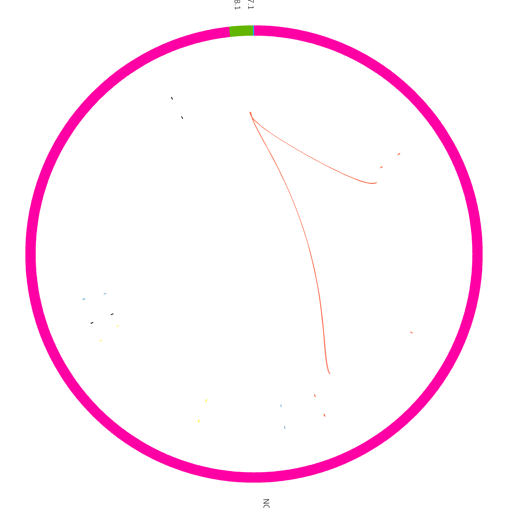
The circos plot has been formatted so both the variant calls (sniffles) and the true SVs are displayed. The ideogram (outer coordinate system) is displaying the bacterial chromosome and two plasmids. One plasmid is reasonable size, while the other is tiny.
The outer tile track displays sniffles calls, and the inner track is the true added variants. Link tracks (lines connecting regions of the plot) have been added which show the translocation breakends called by sniffles in yellow, and any undetected breakends in red. From this plot, we can quickly see that sniffles detected most of the variants, but a few were still missed.
Section 2: Human clinical dataset¶
Introduction¶
Pathogenic structural variation has become more thoroughly understood in recent years, partly driven by the advent of long-read sequencing technologies. For the remainder of this workshop, we will use a dataset which emulates a patient case.
In this example, long-read sequence data was able to identify a causal SV, where short-read sequencing had previously reported a negative result. The dataset was simulated according to the findings of Merker et al (2018) and can be found at https://dx.doi.org/10.1038%2Fgim.2017.86.
Patient Case¶
The patient is a male who had numerous recurring tumorous growths over their development. At age 7, an atrial myxoma of the heart was discovered and removed, followed by a Sertoli-Leydig cell tumor at age 10, a pituitary tumor at 13, more growths on the heart at 16 and 18 which were surgically removed. After the heart surgery at 18 years old, he suffered from a cardiac arrest which he eventually recovered from. At 18, the possibility of a Carney complex was suggested, but short read sequencing and analysis of the PRKAR1A gene returned negative for pathogenic variation.
The patient continued to develop tumors over the following years, prompting another round of sequencing - this time, whole genome sequencing (WGS) using long reads. 26.7 Gb of reads were produced using the PacBio Sequel system, equating to an average read depth of 8.6x.
The following dataset is simulated reads from a section of chr17 which emulate the patient case.
Getting the data¶
To start, we need reads from our section of chr17 (pos 66,000,000 - 69,000,000) for variant calling against hg38, and a file listing genomic features (GFF) for automated annotation later on.
Import the following Galaxy history to get started:
https://usegalaxy.org.au/u/graceh1024/h/carney-complex---chr17-reads
SV Calling using Workflow¶
Rather than manually running each tool again using our chr17 reads and human reference genome hg38 as reference, we will use a workflow to do the analysis for us. hg38 is a built-in genome in galaxy, so we do not need to provide it ourselves. The workflow will perform the following:
- Read QC (Filtlong)
- Produce a summary report of filtered reads (NanoPlot)
- Align reads to hg38 (minimap2)
- Calculate the MD tag (CalMD) and sort the BAM file by coordinate (SortSam)
- Call variants (sniffles)
- Sort the variant calls (VCFsort)
- Create a summary of the variant calls (awk)
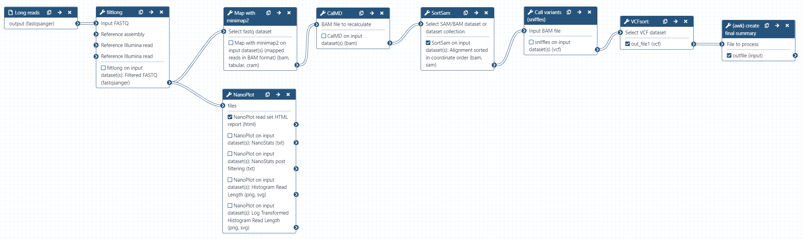
As we are aligning reads to hg38, the alignment step will take longer than for the bacterial dataset. The human genome is approximately 640x larger than E. coli sakai, so this is understandable. Reads may take 15 minutes to map during the workflow.
Invoke the workflow using this link:
https://usegalaxy.org.au/workflows/run?id=d69a765cfc82a399
Set the following:
- Long reads: chr17_reads.fastq
- CalMD
- Using reference genome: ‘hg38’
Click the blue ‘Run Workflow’ button on the top right to execute the workflow.
This workflow produces the key outputs we need. The NanoPlot HTML report summarises our reads after filtering, which we can view to determine the quality of our read set. The sorted alignments contain the alignment information, which we can download to view using a genome browser. variant calls sorted is the sorted VCF file produced by sniffles, and variant calls summary is our simplified awk summary of the variant calls. Use the eye icon to view these outputs for your own interest.
All going well, your final variant calls summary will look similar to the following:
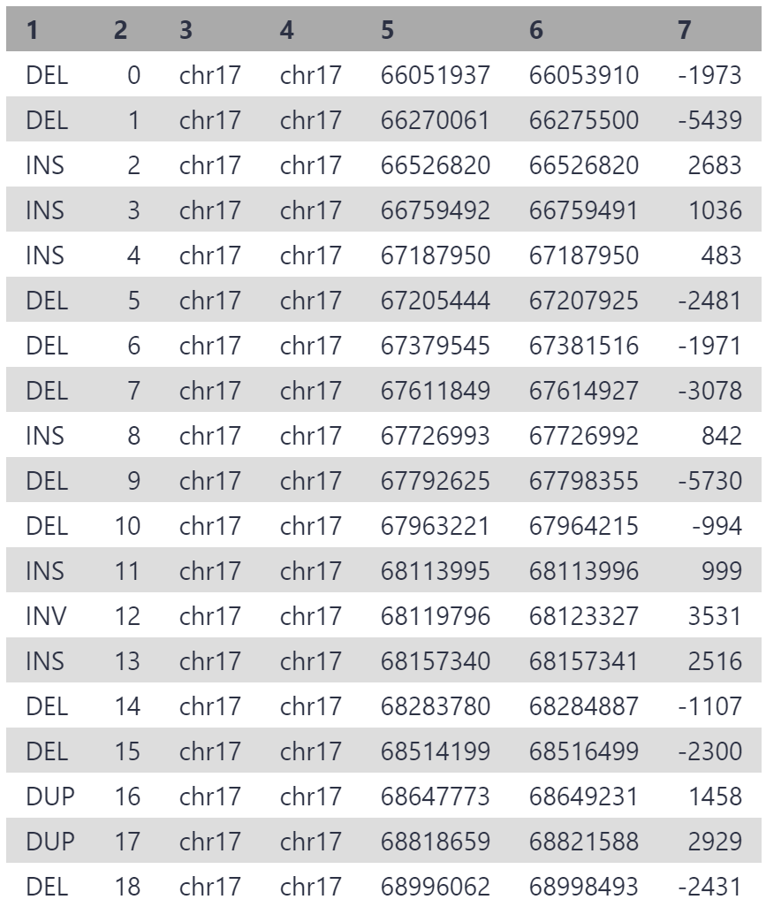
As our reads are from a 3 mbp segment of chr17, the variants are all located on chr17, between position 6,600,000 and 6,900,000. 19 structural variants have been detected, which is a reasonable number for this segment given that multiple thousand variants are generally detected between any individual and hg38.
One of these variants is causing patient disease, and we will identify the culprit using IGV.
Visualising Alignments with IGV¶
We will use IGV to inspect the variant calls, and determine which may be causing disease. In particular, we are looking for structural variation which spans or interrupts gene coding sequences, as these are most likely to cause a disease phenotype.
We wish to view the alignments and variant calls, so will download the sorted alignment files (BAM and BAI) and the variant calls (VCF). We can then upload this data to the IGV webapp to visualise.
Download Alignments and Variant Calls Data
Click the save icon in the ‘sorted alignments’ output, and download both the dataset (BAM) and the bam_index (BAI) files. The BAM contains read alignment information, and the BAI contains an index which allows IGV to load this data.
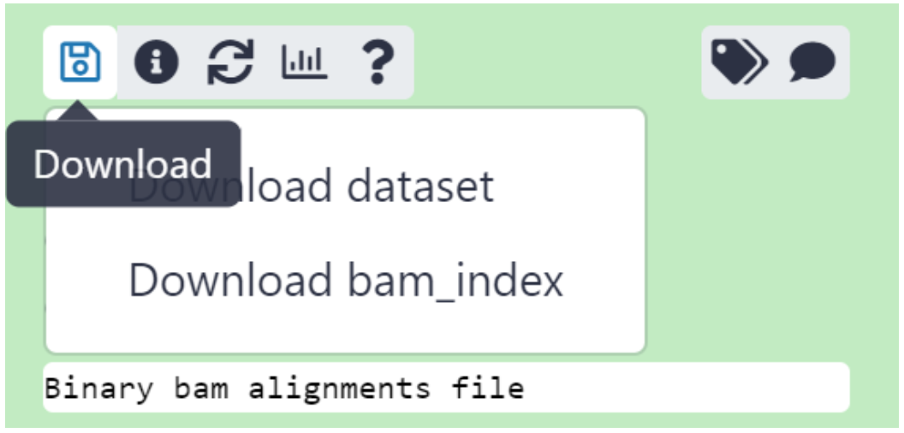
Do the same for the ‘variant calls sorted’ VCF output. This time, simply clicking the save icon will download the VCF as there is only 1 piece of data.
Open IGV and set to hg38
Navigate to https://igv.org/app/ to open IGV.
Genome browsers use a reference genome as a coordinate system, and anchor data to these coordinates. Datasets are loaded as ‘tracks’, and use the selected reference genome as coordinates.
The first thing we need to do is ensure the correct genome is loaded. By default, this is human reference genome hg19. We used hg38 as reference genome when aligning our chr17 reads.
In the top toolbar, click ‘Genome’ then select Human (GRCh38/hg38)
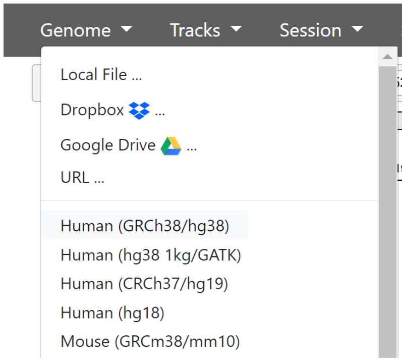
Now we have the current version of the human genome loaded and ready to use. The genome is divided by chromosome markers which you will see as sections marked at the top of the screen. Below that, we have a single ‘track’ - RefSeq gene annotations.
We now need to add our two tracks - the variant calls, and alignments.
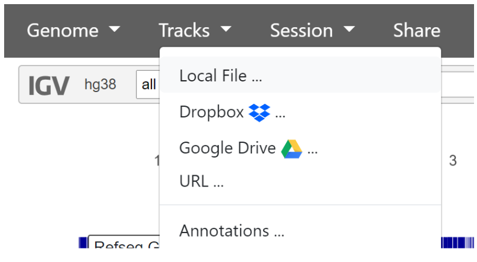
To add the variant calls, click ‘Tracks’ then ‘Local File’ in the top navigation bar, and select the sorted variant_calls_sorted VCF file.
To add the read alignments, click ‘Tracks’ then ‘Local File’ in the top navigation bar, then upload the sorted_alignments BAM and BAI files we downloaded from the SortSam output. Both the .BAM and .BAI files must be selected together.
Currently, there is too much data to load the alignments and variant calls. We will need to zoom in to see this information. In the grey bar at the top of the genome browser, next to hg38, use the dropdown to select chr17. Now that chr17 is selected, we will investigate our variant calls.
One of the variants was located approximately between position 66270000 and 66276000. We can view this region by typing coordinates in the box next to the chromosome selector. Set it to the following:
This is what we can see in the region:
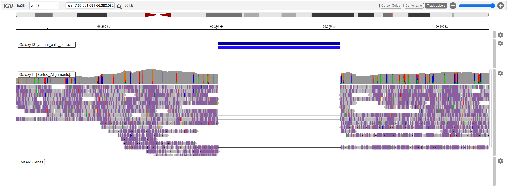
A deletion is evident. No reads are aligned in this region, and the coverage is high enough to support this variant call.
While this is clearly a variant, it is not spanning any known RefSeq genes. We are looking for a variant which is causing tumors, so genes involved in cell signalling such as PRKAR1A, tumor suppression, or growth factors may be implicated.
Once you have looked at some variant calls in detail, expand the below to reveal the variant causing disease:
Disease causing variant location
Reveal
chr17:68,509,063-68,520,941
Enter the coordinates above to view the disease variant. Your IGV may look similar to the following:
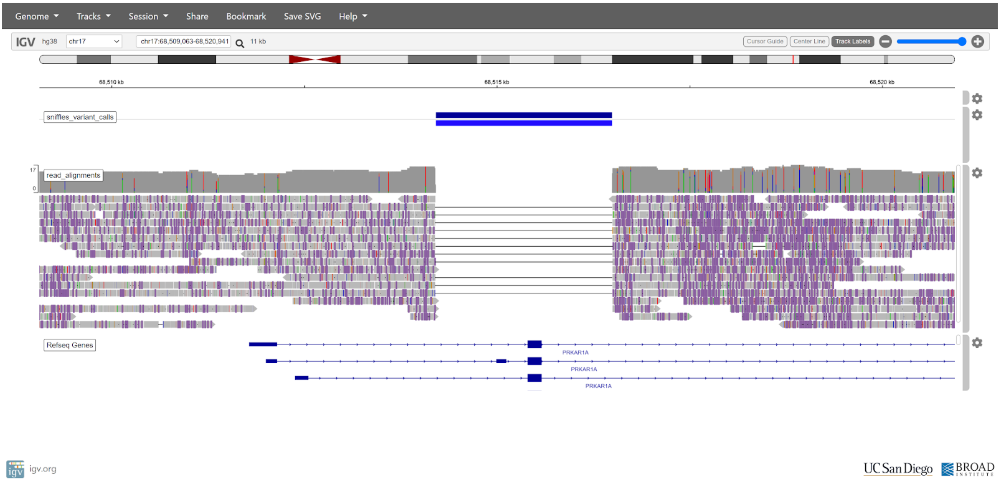
There is a clear deletion spanning the first coding exon of the PRKAR1A gene. This deletion would likely have a large impact on protein function, as the start codon and an entire exon has been deleted.
After obtaining this result, managing doctors diagnosed the patient with Carney complex due to the pathogenic deletion in PRKAR1A. This shows an early example of how SV detection can be used in a clinical setting to diagnose patient disease, and that long reads have an advantage over short reads for structural variation detection.
Genomic Feature Annotation of Variant Calls¶
As a final summary, we will annotate our variant calls with the genomic features they intersect with. Rather than manually inspect each variant call with a genome browser, we can automate this process. Genome annotations provide locations and descriptions for important genomic features which have been discovered. Genome annotations are available for most assemblies on RefSeq, and the hg38 annotations are naturally very good.
Today we will use genome annotations in the general feature format (GFF) format. We will invoke a workflow which uses a GFF file and our variant calls VCF file as input, then annotates the variant calls with any features they intersect with.
A GFF has been provided for chr17, and includes a vast amount of information. We will just look at coding sequences (CDS) intersecting our variants, as distruptions in these regions are likely to have functional impact.
Invoke the workflow using this link:
https://usegalaxy.org.au/workflows/run?id=142e5f7c1f340838
Set the following:
- Genome Annotations (GFF): chr17_annotations.gff
- Sniffles Variant Calls (VCF): variant calls sorted
- Extract features
- Extract features: select ‘CDS’ from the list
Click the blue ‘Run Workflow’ button on the top right to execute the workflow. View the ‘variant calls summary (annotated)’ output. Yours may be similar to the following:
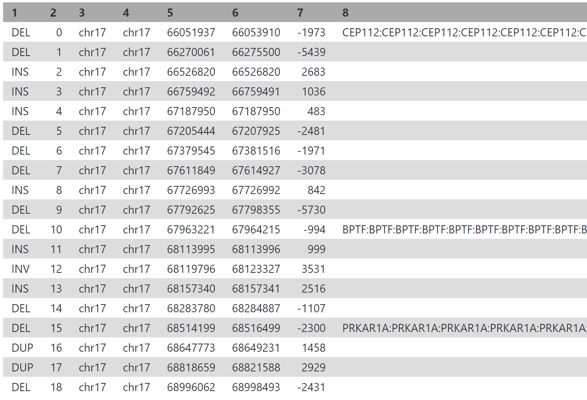 margin-right: auto;
width: 90%;">
Considering we may have thousands of structural variants between an individual and hg38, this process can drastically cut down on time. In the associated paper, authors reduced the initial > 13,500 variant calls down to only 3, by filtering for variants which overlap a disease gene coding exon, and those which are not present in a healthy control sample.
Conclusion¶
Today, we have covered a large amount of theory and analysis. Structural variant detection is a growing area, and will no doubt yield many discoveries in the near future. As with any bioinformatic analysis, we first explored our input data, performed our analysis, then finished by visualising and interpreting our findings.
For those wishing to learn more about human clinical SV calling, dbVar (https://www.ncbi.nlm.nih.gov/dbvar/) and other repositories which contain information linking structural variants and disease is a good place to start.
Additional reading¶
Links to additional recommended reading and suggestions for related tutorials.